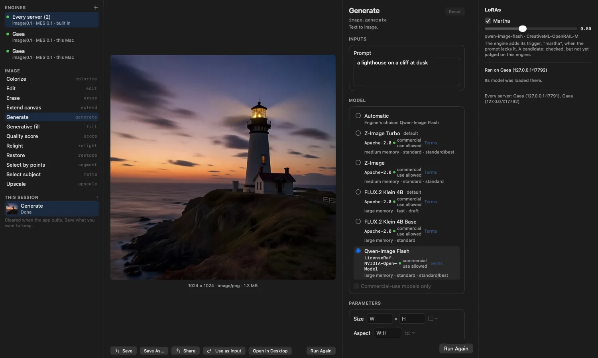
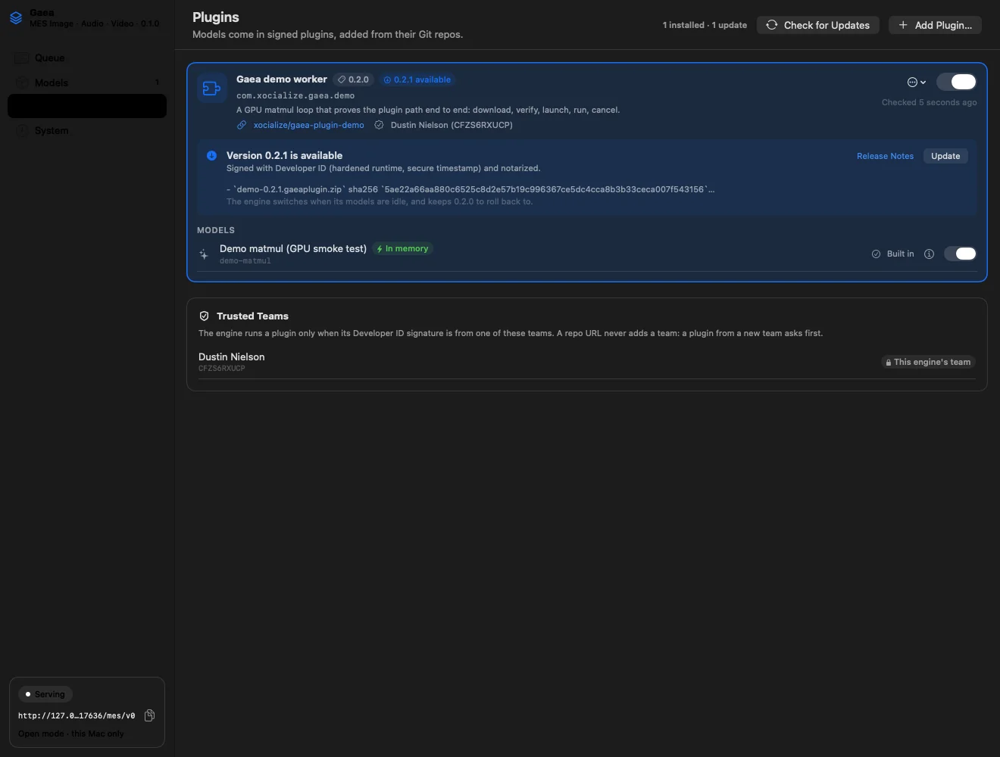

Gaea is an open-source media server for Apple silicon. It runs open MLX models as signed plugins, keeps them within your Mac's memory, and serves them to every app on your network through one API.
MES ImageMES AudioMES VideoSigned pluginsRuns on your MacOne job at a time, no surprisesApache-2.0No accountsMES ImageMES AudioMES VideoSigned pluginsRuns on your MacOne job at a time, no surprisesApache-2.0No accounts
Why a media server
Chat is one shape. Media is many.
Local LLM servers made open models easy to use, because text goes in and text comes out. Generative media doesn't fit that pipe. A picture needs a size, a seed, and maybe a mask and three references. A voice streams out while it is still being spoken. A video has a frame rate, a soundtrack, and a label saying a model made it.
Gaea takes that on so your app doesn't have to. A job names an operation and a quality tier. Gaea picks the model, fits it into memory, runs it, and hands back files that say what made them.
ChatMessagestext→A replytext
image.editPrompt and two reference imagessized to suit the model→1024 × 1024 PNGseed, lane and licence attached
audio.speakText and a voiceor a reference to clone→Speech, streamedchunks that rebuild the WAV
audio.generate"Rain on a tin roof", 6 swith a negative prompt→48 kHz audioexact to the frame
video.generatePrompt, first and last framesterms accepted by the user→MP4 with soundlabelled AI-generated
Three profiles, one engine
Everything an app can ask for, by operation.
Gaea serves the Media Engine Spec's Image, Audio and Video profiles. Apps ask for an operation. Plugins bring the models behind it, and a new model reaches every app without an app update.
Image
MES Image
Generate, edit with references, repair and take apart.
image.generateText to imageZ-Image Turbo · FLUX.2 Klein 4B · Qwen-Image Flash · Boogu-Image · Ming-Image
image.editEdit from one or more reference imagesFLUX.2 Klein 4B · Qwen-Image-Edit 2511 · Boogu-Image
image.fill · image.upscale · image.restoreInpaint, enlarge and repairForge processing pack
image.matte · image.segmentCut out a subject, or select by pointsForge processing pack
image.decomposeSplit a design into layers at its own sizeMing-Image Design-Layer
Audio
MES Audio
Voices, edits, sound effects and whole songs.
audio.speakText to speech, streamed as it's spokenKokoro-82M, 28 voices · Qwen3-TTS 1.7B, voices, emotions and cloning
audio.design_voiceDescribe a voice and get oneQwen3-TTS Design
audio.edit_speechChange emotion or style, add a laugh or a sigh, denoise, trimStep-Audio-EditX
audio.generateSound effects from 0.5 to 30 s at 48 kHzMOSS-SoundEffect v2.0
audio.composeSongs and instrumentals from 10 s to 10 min, in 50 languagesACE-Step 1.5
Video
MES Video
Clips with sound, and the tools to finish them.
video.generateText or keyframes to video, with soundLTX 2.5, four memory tiers
video.extend · video.retakeContinue a clip, or redo a span of itLTX 2.5
video.upscale×2 or ×4, up to 1920 × 1080SeedVR2-3B
video.interpolate2× to 8× the frames up to 4K, keeping the soundRIFE 4.25
How it works
The host keeps order. The plugins do the generating.
Gaea runs the front door, the queue, memory across processes and each plugin's life. Every model family runs as a plugin in a process of its own, on the GPU your Mac already has.
Your apps
Your own appMESClientKit or plain HTTP
Gaea Labevery server as one engine
Pixel Agency appsDesktop and friends
Scriptscurl, CI, agents
MES · :17630
Gaeathe host
Queueone GPU job at a time
Memory governorbudget, lanes, eviction
Plugin managerinstall, update, roll back
Trust listsignatures, never URLs
Console, menu bar and the gaea CLI · gaea.sqlite
GPP · one process each
Plugins
z-image
flux2-klein
kokoro
ltx
MLX on Metal · unified memory
Add a plugin by its repo
gaea plugins add <github-url> fetches the newest release. Gaea checks its Developer ID signature and notarization against your trust list.
Its models appear everywhere
Every app sees the new operations and models on its next look. Models that need a licence accepted start switched off.
An app sends a job
It names an operation, inputs and a quality tier: draft, standard or best. Options a model adds travel as x- extensions.
Gaea makes room
It admits the job against the memory budget, stops idle workers if it must, and loads the largest lane that fits.
The plugin generates
In its own process, streaming progress and audio chunks as it goes. A crash costs one worker, and the job runs once more.
The result says what ran
Files with the model, licence, effective parameters and warnings. No media outlives its job.
What Gaea handles
The hard parts of running models, done once.
Memory that never surprises
Gaea knows a model's footprint before it loads it. Jobs are admitted against a budget of three quarters of your Mac's memory, and Gaea learns each model's real peak from its runs.
Lanes: bf16, int8, int4
When the default doesn't fit, Gaea loads the largest lane that does and adds a warning. Ask for a lane with x-gaea.lane and you get exactly that lane, or a clear refusal.
Trust from the signature
Plugins are notarized Developer ID bundles, checked at install and every launch. A release from a team you haven't trusted waits for your approval.
One process per model
A crashing model takes down its own worker, never the server. Gaea records the crash with macOS's report, reruns the job once, and quarantines a plugin that crashes three times in ten minutes.
Updates with a way back
Gaea and its plugins update from GitHub releases, verified before they install. Updates wait for running jobs to finish, and the previous version is kept for rollback.
Honest results
Every result names its model and licence, the parameters that took effect, and any warnings. Video carries an AI-generated label.
LoRA adapters by URL
gaea adapters add <hf-url> --model <id> registers a LoRA from Hugging Face, pinned to its commit and sha256.
Keeps nothing
Gaea is stateless and safe to restart. Inputs and outputs live only as long as the job, so libraries and projects stay in your apps.
For home and small offices
One Mac can serve the whole office.
Put a Mac Studio or Mac mini in the corner, add the plugins you need, and every app on the network can generate with them.
A menu-bar app, or headlessOpen Gaea.app, or run --headless from a launch agent on a Mac no one sits at.
Apps find it on their ownGaea advertises itself over Bonjour. It serves only its own Mac by default. --paired opens it to your network over TLS, and each device pairs once.
Several servers, one poolGive each Mac its own area, such as image on one and video on another. Apps pick a server for each job.
Only you configure itApps can use Gaea but never change it. Plugins, models and trust are set in its console or with gaea on that Mac.
Memory ledgerMac Studio · 128 GB
0budget · 96 GB128 GB
z-image-turbo · int8warm
kokoro-82mstreaming
ltx · standard64running
flux2-klein-4b · bf16idle, stopped first
Illustration. Gaea charges each worker what it holds, stops idle ones least recently used first when a job needs room, and refuses with no_capacity only when nothing more can be freed.
For developers
One API for every model.
Gaea speaks MES, an open HTTP spec for media engines. Write against operations once, and new plugins show up in your app without a code change.
# Ask any Gaea for an imagecurl -s http://127.0.0.1:17630/mes/v0/jobs \
-H 'MES-Version: 0.1' -H 'Content-Type: application/json' \
-d '{"operation": "image.generate",
"inputs": {"prompt": "a lighthouse on a cliff at dusk"},
"params": {"quality": "best", "seed": 42,
"size": {"width": 1024, "height": 1024}}}'# → {"id": "…"}# Wait for it, then fetch result.outputs[].hrefcurl -s 'http://127.0.0.1:17630/mes/v0/jobs/<id>?wait=10' \
-H 'MES-Version: 0.1'# What can this server do right now?curl -s http://127.0.0.1:17630/mes/v0/operations -H 'MES-Version: 0.1'
# Add models from GitHubgaea plugins add https://github.com/xocialize-code/gaea-plugin-z-image
gaea plugins add https://github.com/xocialize-code/gaea-plugin-kokoro
# See what's offered, and choose a default lanegaea models
gaea models lane z-image-turbo int8# Keep weights on a fast volumegaea models root /Volumes/Models
# Watch memory, workers and crashesgaea ledger
gaea status
# Stay current, with a way backgaea plugins check
gaea update --check
# 1. Start from the templategh repo create my-gaea-plugin --template xocialize-code/gaea-plugin-demo --clone
# 2. Wrap your MLX model with GaeaPluginKit and describe it in
# manifest.json: operations, quality tiers, lanes, licence# 3. Sign with your own Developer ID, notarize, tag a releasegit tag v0.1.0 && git push origin v0.1.0# 4. Any operator can install it. The first release from
# a new team waits for their approval.gaea plugins add https://github.com/you/my-gaea-plugin
See it
A console for you. Any app for everyone else.

Gaea Lab, the reference app, pools two Gaea servers into one engine. Each model shows its licence and memory size, and this image ran on Qwen-Image Flash with a LoRA.

The console's Plugins page. Every update shows its signature, notarization and sha256 before you take it, and the trust list sits right below.
The plugins
Open models, ready to install.
Each one is a repo on GitHub with signed releases. Most come in several lanes, so a Mac with less memory runs a lighter quantization of the same model.
Bring your own model: the plugin template starts you with signing, a self-check and release CI. Adapters are not plugins; add a LoRA with gaea adapters add.
Open source
Give open models a place to grow.
Gaea is free and open source under Apache-2.0. It runs on hardware you own, asks for no account, and keeps your media on the network you choose.